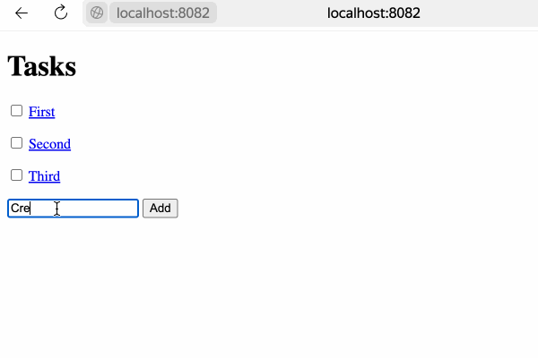
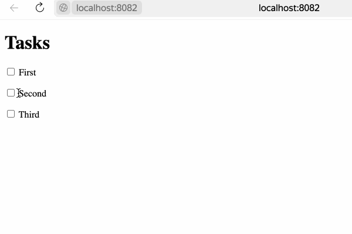
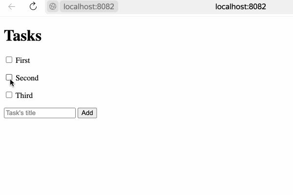
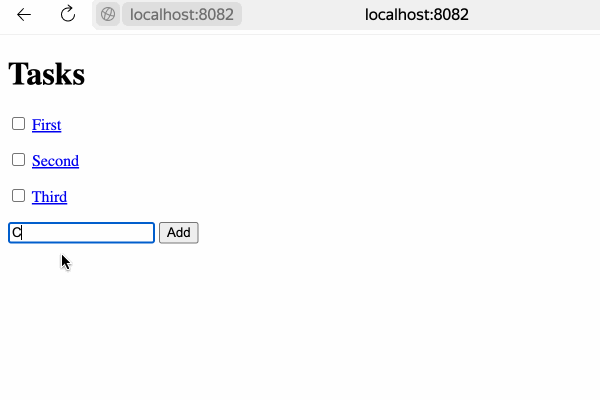
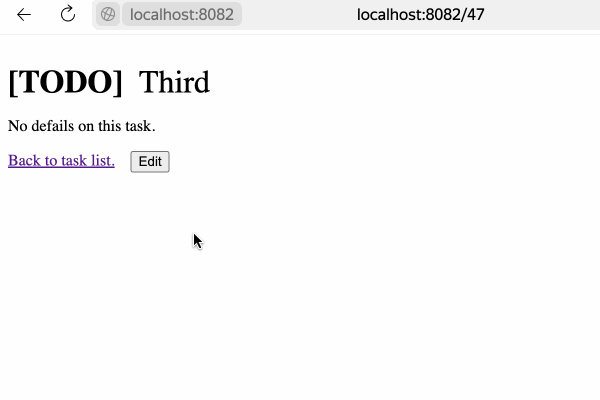

Quickstart
Initial Setup
It is better to use the latest Reblocks because the version from Quicklisp can be outdated. You can install the Ultralisp Quicklisp distribution where all Reblocks-related libraries are present and up to date.
Before we start, quickload reblocks and create a package for our todo application:
(defpackage #:todo
(:use #:cl)
(:import-from #:reblocks/widget
#:render
#:update
#:defwidget)
(:import-from #:reblocks/actions
#:make-js-form-action
#:make-js-action)
(:import-from #:reblocks/app
#:defapp)
(:import-from #:reblocks/routes
#:page)
(:import-from #:serapeum
#:soft-list-of)
(:import-from #:40ants-routes/route-url
#:route-url)
(:import-from #:reblocks/html
#:with-html)
(:import-from #:reblocks/widgets/string-widget
#:make-string-widget)
(:shadowing-import-from #:40ants-routes/defroutes
#:get))
(in-package #:todo)Basic App
Full source of this step is in here.
At this stage, we will create a simple Reblocks application:
(defapp tasks
:prefix "/"
:routes ((page ("/" :name "tasks-list")
(make-string-widget "Hello World!"))))
(defun start (&key (port 8080))
(reblocks/server:start :port port
:apps '(tasks)))
By default, the name of the app defines the URL where it will be
accessible. If we omit the PREFIX argument here, then the application
will be accessible at http://localhost:8080/tasks. But we want
to make it work at the site's root.
Also pay attention to the ROUTES argument. This is how we can
define a set of application pages. Previously for the same effect
we had to use a separate ASDF system reblocks-navigation-widget,
but now this kind of routing is embedded into Reblocks.
Run start function from the REPL to make our webserver running on port 8080.
Open http://localhost:8080/ in your browser (double check the port) and you'll see a text like that:
Hello World!During this tutorial we will add features to this simple web application
and finally we'll build the mandatory TODO-list app:

Tasks List Page
Full source of this step is in here.
Task Model
First of all, we need to define a data-model for keeping information about tasks.
For simplicity of our toy project, we will keep data in the *store* hash-table:
(defclass task ()
((id :initarg :id
:initform (error "Field ID is required")
:accessor id
:type integer)
(title :initarg :title
:initform ""
:accessor title)
(description :initarg :description
:initform ""
:accessor description)
(done :initarg :done
:initform nil
:accessor done)))
(defvar *store* (make-hash-table)
"Dummy store for tasks: id -> task.")
(defvar *counter* 0
"Simple counter for the hash table store.")
(defun make-task (title &key done)
"Create a task and store it by its id."
(let* ((id (incf *counter*))
(task (make-instance 'task :title title :done done :id id)))
(setf (gethash id *store*) task)
task))
(defun get-task (id)
(gethash id *store*))Here we've defined the task class and the make-task function for creating
instances. It isn't mandatory, but it is good practice to do so. Beside of that,
our constructor selects an autoincremented id for a new task.
If you are not familiar with the Common Lisp Object System (CLOS), you
can have a look at Practical Common Lisp
and the Common Lisp Cookbook.
Task List Item
Now we will create a widget to display the list of tasks.
Each item in the list will be a widget itself. It will allow use to update only the changed piece of data. Here is the code which defines a list item widget holding the reference to the task object:
(defwidget list-item ()
((task :initarg :task
:type task
:reader task)))
(defun make-list-item (task)
(make-instance 'list-item
:task task))This code defines a list-item widget, the building block of our
application. The reblocks/widget:defwidget macro is similar to Common Lisp's DEFCLASS,
in fact it is only a wrapper around it. It takes a name, a list of
super-classes (here ()) and a list of slot definitions.
We can create a list-item with the make-list-item function.
Now we need to define a method for the reblocks/widget:render generic-function to render
this widget:
(defmethod reblocks/widget:render ((list-item list-item))
(let ((task (task list-item)))
(with-html ()
(:p (:input :type "checkbox"
:checked (done task))
(if (done task)
(:s (title task))
(title task))))))The reblocks/html:with-html macro uses
Spinneret under the hood,
but you can use anything that outputs html.
We can check how the generated HTML looks by calling the
reblocks/widget:render generic-function in the REPL:
TODO> (ql:quickload :reblocks-tests)
TODO> (reblocks-tests/utils:with-test-session ()
(render
(make-list-item
(make-task "Make my first Reblocks app"))))
<div class="widget list-item" id=dom0><p>
<input type=checkbox>Make my first Reblocks app
</div>Toggling Task State
To make our task list more useful, we need to allow a user to interact with it.
Let's add an onclick handler which will change task's state from todo to done and vice versa:
(defun toggle (list-item)
(let ((task (task list-item)))
(setf (done task)
(if (done task)
nil
t))
(update list-item)))
(defmethod reblocks/widget:render ((list-item list-item))
(let ((task (task list-item)))
(with-html ()
(:p (:input :type "checkbox"
:checked (done task)
:onclick (make-js-action
(lambda (&key &allow-other-keys)
(toggle list-item))))
(if (done task)
(:s (title task))
(title task))))))Here we've defined the toggle function which will be called
when the user clicks the task list item. Also, we've added an on-click argument
to the :input element. The reblocks/actions:make-js-action function
accepts a Lisp function and returns a string with JavaScript code which
calls this Lisp function from the frontend side.
After changing a task state, the toggle function calls the
reblocks/widget:update generic-function to send updated widget HTML code
from the backend to the frontend. This mechanism is close to HTMX,
but with Reblocks you don't need to define a special API handler for each action
or embed something into the HTML attributes - Reblocks does this for you and
keeps a closure in the session, created by the lambda form.
This is really amazing!
With Reblocks, you can handle all the business logic on the server-side, because an action can be any Lisp function, even an anonymous lambda, closuring all necessary variables.
Here is how our widget will be rendered now:
TODO> (reblocks-tests/utils:with-test-session ()
(render
(make-list-item
(make-task "Make my first Reblocks app"))))
<div class="widget list-item" id=dom0><p>
<input type=checkbox
onclick="return initiateAction(706:877a48a20059e989576b9c560935aa2588524bab)">
Make my first Reblocks app
</div>Rendering a List of Tasks
Now we will create a widget for displaying the list of tasks.
First, we will define a widget and a constructor function:
(defwidget task-list ()
((items :initarg :items
:type (soft-list-of list-item)
:accessor list-items)))
(defun make-task-list (&rest task-titles)
(let ((items
(loop for title in task-titles
for task = (make-task title)
collect (make-list-item task))))
(make-instance 'task-list
:items items)))
The constructor allows us to create a bunch of test tasks by giving their titles.
Now let's define a render function for the task-list widget:
(defmethod reblocks/widget:render ((task-list task-list))
(with-html ()
(:h1 "Tasks")
(loop for item in (list-items task-list) do
(reblocks/widget:render item))))To check how this works, redefine our application like this:
(defapp tasks
:prefix "/"
:routes ((page ("/" :name "tasks-list")
(make-task-list "First"
"Second"
"Third"))))Restart the application and reload the page. Test your form now and see in the
Web Inspector how Reblocks sends requests to the server and receives
HTML code with the rendered HTML block.
At this stage you should see something like that:

Adding a New Task
To make our application even more usable, we need to create a form for adding new tasks.
Update the method for the reblocks/widget:render generic-function like this:
(defun add-task (task-list title)
(serapeum:push-end (make-list-item (make-task title))
(list-items task-list))
(update task-list))
(defmethod reblocks/widget:render ((task-list task-list))
(with-html ()
(:h1 "Tasks")
(loop for item in (list-items task-list) do
(reblocks/widget:render item))
;; Form for adding a new task
(flet ((on-submit (&key title &allow-other-keys)
(add-task task-list title)))
(:form :onsubmit (make-js-form-action #'on-submit)
(:input :type "text"
:name "title"
:placeholder "Task's title")
(:input :type "submit"
:class "button"
:value "Add")))))Here we've used the reblocks/actions:make-js-form-action function to create JavaScript code
for calling the on-submit function on the backend.
This callback just calls the add-task function which creates a new list item and calls the reblocks/widget:update
generic-function to update the whole list of tasks.
If you need to work with large lists or complex data, then it is better to not update the whole collection
widget but only insert a new item into the DOM. To accomplish this, you can provide an INSERTED-AFTER argument
to the reblocks/widget:update generic-function:
(defun add-task (task-list title)
(let ((last-item (alexandria:last-elt
(list-items task-list)))
(new-item (make-list-item (make-task title))))
(serapeum:push-end new-item
(list-items task-list))
;; This time we are calling update on a new list item:
(update new-item
;; And providing the frontend
;; a hint that we've inserted this new-item
;; after some other item:
:inserted-after last-item)))Right now it should look like this:

or for interactive demo see:
Adding Details Page
Full source of this step is in here.
Now, we'll add the ability to open the task details page. There are a few possibilities to accomplish this task in Reblocks:
We can make a \"single page application\" and when the user clicks on a list item, the whole list widget will be replaced with a widget showing details about the task. This is good if we are building a widget to be embedded into some other page where we don't want to change the
URL. But in this scenario we also need to implement controls for returning back to the tasks list or hook into the browser'sAPIfor managing history state. Also, in this mode all states of the application will have the sameURLand it will be impossible for the user to share a link to a single task.We can implement a classical web app where the task details page will have its own
URL. This makes history and sharing work as the user expects. For this reason and also to show you how routing works in Reblocks, we'll go this way.
Task Details Widget
For showing task details we need yet another widget. You see, a widget is a representation of some data and there could be multiple kinds of representation for the same data! In our example, the same task might be rendered as a list item or as a whole page's content.
To render task with all details, define a task-page widget like this:
(defwidget task-page ()
((task :initarg :task
:type task
:accessor task)
(edit-mode-p :initform nil
:type boolean
:accessor edit-mode-p)))
(defun make-task-page (task-id)
(let ((task (get-task task-id)))
(cond
(task (make-instance 'task-page
:task task))
(t
(reblocks/response:not-found-error
(format nil "Task with id ~A not found."
task-id))))))
Note, the constructor calls the reblocks/response:not-found-error function which will
interrupt request processing and show a 404 error page to the user. This function
accepts text or a widget, so you might define a widget to render the 404 page as you like!
Now we need to write a render method for the task-page widget:
(defmethod render ((task-page task-page))
(let ((task (task task-page))
;; This is the way how we can get URL path
;; pointing to another page without hardcoding it.
(list-url (route-url "tasks-list")))
(with-html ()
(:div :style "display: flex; flex-direction: column; gap: 1rem"
(:h1 :style "display: flex; gap: 1rem; margin-bottom: 0"
(:b (if (done task)
"[DONE]"
"[TODO]"))
(:span :style "font-weight: normal"
(title task)))
(:div (if (string= (description task) "")
"No details on this task."
(description task)))
(:div :style "display: flex; gap: 1rem"
(:a :href list-url
"Back to task list."))))))Pay attention to how we used ROUTE-URL to get the URL of the page with the tasks list. If we hardcoded
something like / here, then our application's URL would become incorrect in case this application is
mounted to the server using some prefix like /tasks/, but the ROUTE-URL function will always give the correct path.
New Route
Talking about routing, now we need to redefine the routes of our application and add a new page:
(defapp tasks
:prefix "/"
:routes ((page ("/<int:task-id>" :name "task-details")
(make-task-page task-id))
(page ("/" :name "tasks-list")
(make-task-list "First"
"Second"
"Third"))))Here we've defined a new page like this:
(page ("/<int:task-id>" :name "task-details")
(make-task-page task-id))The path "/<int:task-id>" tells Reblocks to extract an argument TASK-ID if the URL matches the route, and
this variable will be bound during the handler body (make-task-page task-id) execution.
Also, note that this route has a NAME argument with the "task-details" value. Now we can use this name
to get the URL of this new page using the ROUTE-URL function.
Referring to a New Page
Let's adjust the render method of the tasks-list widget to make it use ROUTE-URL for linking to the task's page:
(defmethod reblocks/widget:render ((list-item list-item))
(let* ((task (task list-item))
;; Here we are referring to the new task page:
(details-url
(route-url "task-details"
:task-id (id task))))
(with-html ()
(:p (:input :type "checkbox"
:checked (done task)
:onclick (make-js-action
(lambda (&key &allow-other-keys)
(toggle list-item))))
(:a :href details-url
(if (done task)
(:s (title task))
(title task)))))))Now our web application should work like this:

Testing Pages with Route References
Now that we have pages that use ROUTE-URL to reference each other, we can test them in the REPL using the WITH-TEST-ROUTES macro. This macro sets up the proper routing context so that ROUTE-URL calls work correctly:
TODO> (ql:quickload :reblocks-tests)
TODO> (reblocks-tests/utils:with-test-routes (:uri "/1" :app 'tasks)
(render (make-task-page 1)))
<div class="widget task-page" id=dom0>
<div style="display: flex; flex-direction: column; gap: 1rem">
<h1 style="display: flex; gap: 1rem; margin-bottom: 0">
<b>[TODO]</b>
<span style="font-weight: normal">First</span>
</h1>
<div>No defails on this task.</div>
<div style="display: flex; gap: 1rem">
<a href="/">Back to task list.</a>
</div>
</div>
</div>Note how the ROUTE-URL call (route-url "tasks-list") correctly resolves to "/".
Go, try it! This demo is interactive:
Editing Task
Now our app is almost functional. The only thing we are lacking is the ability to edit the task's title and description. Let's modify the task details page to include an edit mode!
What we will do is add a state flag to the task details widget. When the flag is true, we will show an editable form instead of the usual representation of the task:
(defmethod render ((task-page task-page))
(cond
;; Edit mode
((edit-mode-p task-page)
(let ((task (task task-page)))
(flet ((on-submit (&key title description cancel-button &allow-other-keys)
(unless cancel-button
(setf (title task) title
(description task) description))
;; Switch back to read-only mode
(setf (edit-mode-p task-page) nil)
(update task-page)))
(with-html ()
(:form :onsubmit (make-js-form-action #'on-submit)
:style "display: flex; flex-direction: column; gap: 1rem"
(:input :type "text"
:name "title"
:value (title task))
(:textarea :name "description"
(description task))
(:div :style "display: flex; gap: 1rem"
(:input :type "submit"
:name "cancel-button"
:value "Cancel")
(:input :type "submit"
:name "save-button"
:value "Save")))))))
;; View mode
(t
(let ((task (task task-page))
(list-url (route-url "tasks-list")))
(with-html ()
(:div :style "display: flex; flex-direction: column; gap: 1rem"
(:h1 :style "display: flex; gap: 1rem; margin-bottom: 0"
(:b (if (done task)
"[DONE]"
"[TODO]"))
(:span :style "font-weight: normal"
(title task)))
(:div (if (string= (description task) "")
"No details on this task."
(description task)))
(:div :style "display: flex; gap: 1rem"
(:a :href list-url
"Back to task list.")
(flet ((on-edit (&key &allow-other-keys)
(setf (edit-mode-p task-page) t)
(update task-page)))
(:form :onsubmit (make-js-form-action #'on-edit)
(:input :type "submit"
:value "Edit"))))))))))Here is how our app will work now:

And interactive version is here:
What is next?
As a homework:
Play with lambdas and add a \"Delete\" button after each task.
Add the ability to sort tasks by name or by completion flag.
Save tasks in a database (this Cookbook chapter might help).
Read the
Routingsection.Read the rest of the documentation and make a real application, using the full power of Common Lisp.